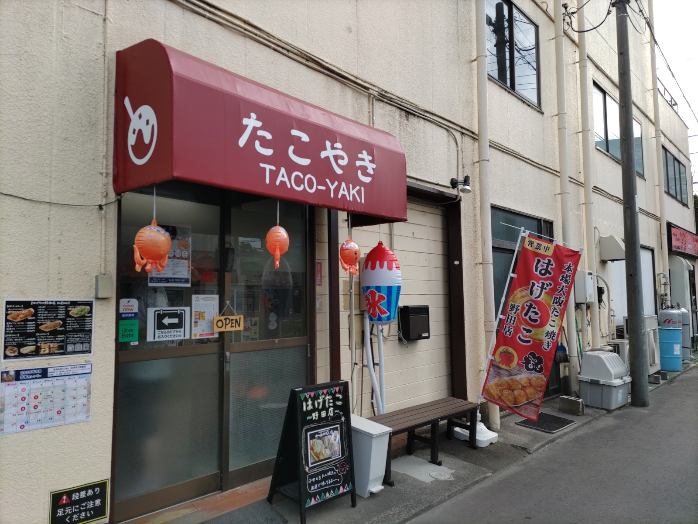

野田の街に、大阪の屋台の熱気を。
「本場大阪たこ焼き はげたこ」は、茨城県守谷市で地元の皆さまに愛されてきたお店です。その2号店として、2025年6月2日、千葉県野田市野田に「はげたこ 野田店」がオープンしました。守谷で大切にしてきた、出汁の効いたふわとろ生地と、お客様をお迎えする温かな心配りを、そのまま野田の街へ。ご夫婦で営む、アットホームな雰囲気の中で、本場の味をお楽しみいただけます。
大阪仕込みのこだわり
- 焼き上がりまでの待ち時間には、無料の卵スープをお出ししています
- 焼き上がりは呼び出しベルでお知らせし、ゆっくりとお待ちいただけます
- たこ焼きの焼き上がりには15〜20分ほどかかるため、お電話でのご予約をおすすめしています
- お会計は現金・クレジットカードのどちらにも対応しております
- 現金でのお支払いには、ポイントカードをご利用いただけます
- お車でお越しのお客様向けに、駐車場を2台分ご用意しております
店舗の様子



※写真はイメージです。メニュー内容・価格等の詳細はお電話にてご確認ください。
店舗概要
| 屋号 | 本場大阪たこ焼き はげたこ 野田店 |
|---|---|
| 住所 | 千葉県野田市野田603 ヨネカワビル102 |
| 電話番号 | 04-7190-5987 |
| 営業時間 | お問い合わせください |
| 定休日 | お問い合わせください |
| 駐車場 | 2台 |
| お支払い | 現金・クレジットカード対応 |
| 開店 | 2025年6月2日(茨城県守谷市「はげたこ」2号店) |